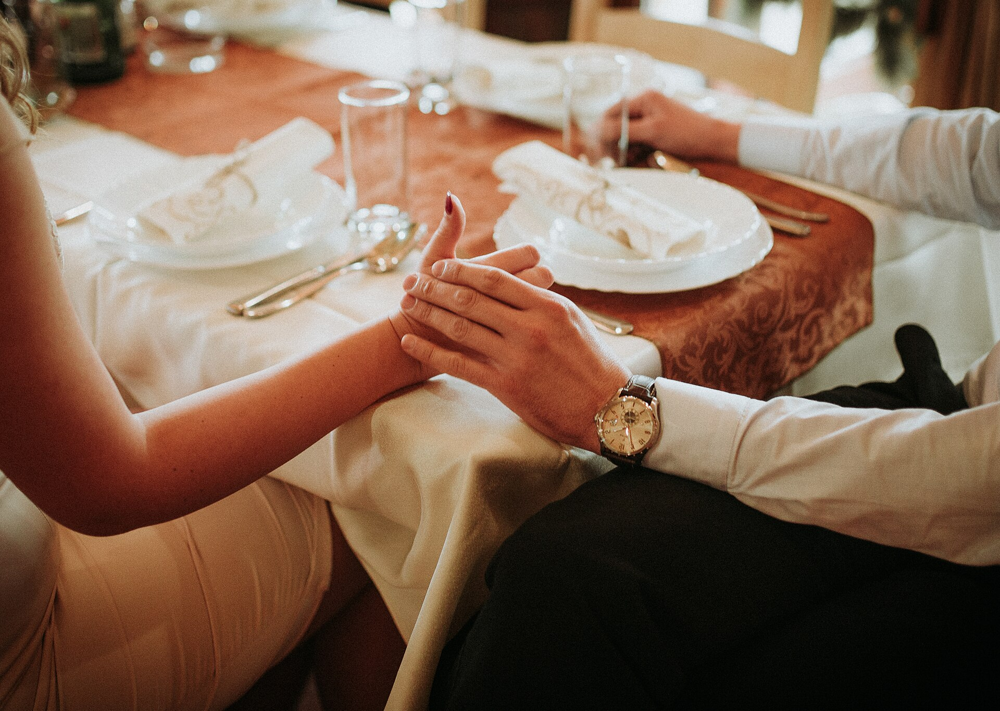
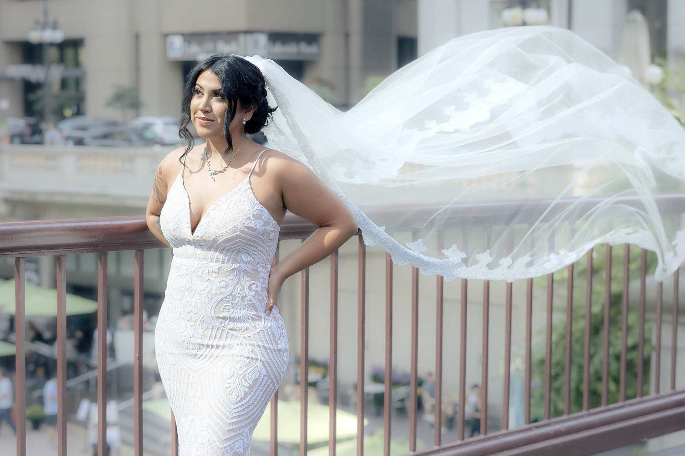
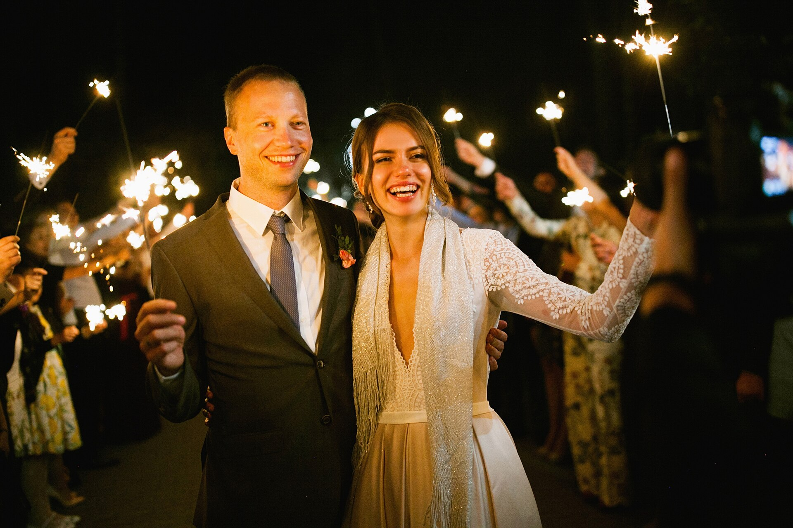
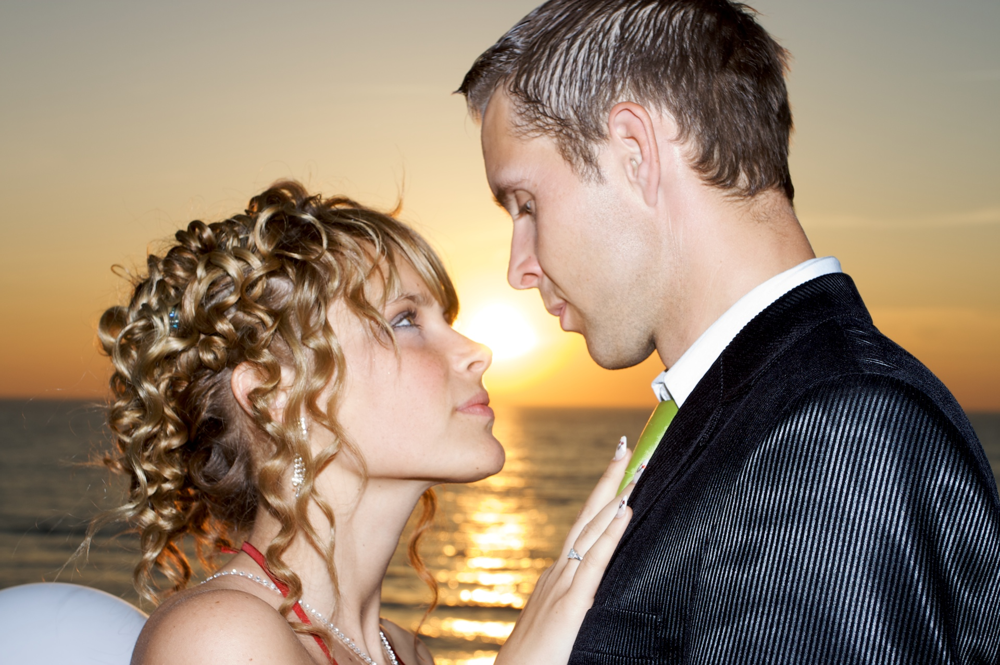
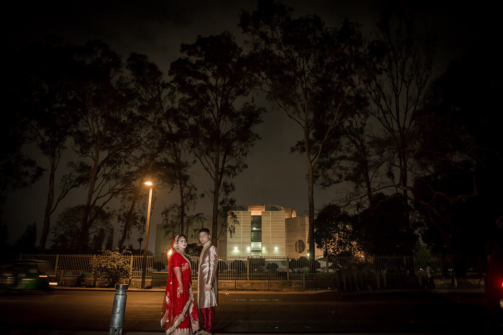

Escolha de estilo · site da Manu Records
19 estilos diferentes: 12 da taste-skill (A a L) e 7 dos outros repositórios dos shorts (M a S). Cada um tem a primeira tela já montada com o nome e o texto dela. Os de A a L vêm da biblioteca da taste-skill: 20 estilos de composição, 56 paletas e 44 combinações de fontes, tirados de 247 sites premiados. As fotos são de casamentos de outras pessoas (licença livre, créditos no fim) e vão ser trocadas pelas fotos e vídeos da Manu.
O que vi no Instagram @manu.recordss
- Quem é: Emanuely ("Manu"), em Brasília. Frase dela: "Um olhar com propósito". Hoje o contato é pelo direct.
- Estilo das fotos: muito preto e branco, fotos espontâneas (risadas, abraços), detalhes de mãos e alianças, luz quente e escura em ambientes fechados. Também tem fotos bem coloridas ao ar livre: céu azul de Brasília e lago.
- O que ela faz: casamento (decoração e vídeo), pré-wedding, ensaios de casal e individual, shows e eventos com músicos, aniversário infantil e reels.
- Marca registrada: os destaques usam as iniciais do casal com "&" (T & E, Y & P, A & L). Isso pode virar um detalhe do site.
- Estilos que mais combinam com ela: A (folha de contato, mundo da fotografia), B (sala escura, ótima para preto e branco), D (duas portas: Fotografia ou Vídeo) e E (céu aberto, com a foto do casal no morro sob o céu azul).
A · Folha de contato (Contact sheet)





RecordsFotografia, vídeo e reels de casamento em Brasília. Um olhar com propósito.Chamar no WhatsApp
Como é: a tela é uma folha de contato de fotógrafo, com dezenas de fotos pequenas e o nome dela numa das casas.
Sensação: trabalho de fotógrafa de verdade, mostra muito portfólio de uma vez.
Cores e fonte: carvão e sálvia · Switzer
B · Sala escura (Dark room)
Pré-wedding
Vídeo e reels
Como é: fundo escuro com uma foto apagada atrás e um cartão no centro, como um programa de evento.
Sensação: elegante e intimista; as fotos em preto e branco dela brilham nesse fundo.
Cores e fonte: preto lunar e bronze · Unbounded + Onest
C · Título de filme (Place carries it)
MANU RECORDS
Como é: uma foto ocupa a tela toda e o nome aparece enorme na base, como o título de um filme.
Sensação: cinematográfica; combina com quem também filma.
Cores e fonte: noite e azul-centáurea · Boska (com serifa)
D · Duas portas (Quiet instrument)
Seu casamento,
em foto e em filme
Escolha por onde começar.
Cerimônia, festa e pré-wedding
O filme do dia e os reels
Como é: fundo escuro, um título e duas fotos lado a lado: Fotografia ou Vídeo. Cada uma leva à sua parte do site.
Sensação: calma e organizada; deixa claro que ela faz as duas coisas.
Cores e fonte: osso, verde e chocolate · Literata (com serifa)
E · Céu aberto (The object, large)
Um olhar
com propósito
Como é: uma foto larga com muito céu em cima; o título fica no céu e a frase se divide em volta do casal.
Sensação: aberta e emocionante. Fica perfeita com a foto dela do casal no morro sob o céu azul de Brasília.
Cores e fonte: azul-marinho e rosa · Switzer
F · Rolo de reels (Pinned poster)
Como é: uma frase dividida nas duas bordas e, no meio, uma faixa vertical de quadros que corre como um rolo de filme ou de reels.
Sensação: moderna e cheia de movimento; destaca os vídeos.
Cores e fonte: papel claro, preto e azul · Chivo (troquei o fundo azul sorteado por papel claro, que combina mais com o trabalho dela)
G · Parede de galeria (Uneven photographs)
Records
Brasília
Manu
Records
Como é: abre com uma foto de ponta a ponta; depois, as fotos aparecem em tamanhos diferentes, como quadros numa parede.
Sensação: leve, artística e silenciosa; o texto quase some e as fotos falam.
Cores e fonte: cinza-rosado e verde · Work Sans
H · Revista (Editorial report)
Fotografia e vídeo de casamento em Brasília, do making of à pista de dança.
Pedir orçamentoUm olhar com propósito
Como é: montada como matéria de revista, com título grande e serifado, colunas e foto de capa.
Sensação: sofisticada; boa para contar a história de cada casamento.
Cores e fonte: grafite e laranja · Young Serif + Source Serif
I · Nome monumento (Name as monument)
ManuRecords
Fotografia, vídeo e reels de casamento em Brasília.
Como é: sem foto na abertura: o nome gigante em duas cores sobre um fundo de cor forte. As fotos vêm logo abaixo.
Sensação: ousada e fácil de lembrar; parece marca de produtora.
Cores e fonte: cinza frio e azul-cobalto · Schibsted Grotesk
J · Cartão-convite (Page is the object)
Fotografia, vídeo e reels de casamento em Brasília.
Como é: metade da tela é um cartão impresso, como um convite de casamento; a outra metade é uma foto que fica parada enquanto o texto rola.
Sensação: delicada e romântica; conversa direto com noivas.
Cores e fonte: areia e musgo · Hanken Grotesk
K · Foto no lugar da letra (Sentence is the layout)
Como é: o nome fica numa linha só, no meio da tela, com uma foto encaixada entre as duas palavras como se fosse uma letra.
Sensação: criativa e diferente; ninguém vai achar que é modelo pronto.
Cores e fonte: tabaco e oliva · Bricolage Grotesque
L · Cardápio e foto fixa (Split stage)
Como é: à esquerda, os serviços como um cardápio elegante; à direita, uma foto grande que fica parada.
Sensação: quente e clara; quem chega já entende o que ela oferece.
Cores e fonte: nogueira e caramelo · Zilla Slab
Mais 7 estilos, tirados dos repositórios dos shorts
M a Q vêm das tabelas da UI UX Pro Max, que recomenda estilos, cores e fontes por tipo de negócio. Para "estúdio de fotografia" ela indica preto e branco com minimalismo suíço; para "casamento", tons suaves com dourado e sálvia. Deixei de fora o vidro fosco e o degradê aurora, que ela também sugere para casamento, porque são justamente a cara de site feito por IA. R e S seguem estéticas descritas na Awesome Claude Design (fundo de cinema e claro-escuro editorial), sem copiar nenhuma marca.
M · Preto e branco suíço UI UX Pro Max
Fotografia e vídeo de casamento.
Chamar no WhatsAppComo é: preto puro, uma foto grande em preto e branco e só o essencial escrito, alinhado num grid.
Sensação: séria e direta; quem manda é a foto. É a recomendação da tabela para estúdio de fotografia.
Cores e fonte: preto e branco puros · Archivo + Space Grotesk
N · Filme analógico UI UX Pro Max
Manu
Records
Registros de casamento, como num filme.
Pedir orçamentoComo é: clima de foto de filme antigo: papel creme, tons sépia e a foto dentro de um quadro de negativo com furinhos.
Sensação: nostálgica e afetiva; conversa com o "Records" do nome.
Cores e fonte: creme, sépia e marrom · Abril Fatface + Merriweather
O · Romântico clássico UI UX Pro Max
Manu Records
Como é: o visual clássico de casamento: letra cursiva dourada, fundo creme, foto em arco e detalhe em verde-sálvia.
Sensação: romântica e tradicional. É o que muitas noivas esperam, mas é também o mais comum entre fotógrafos.
Cores e fonte: creme, dourado e sálvia · Great Vibes + Cormorant Infant (fontes indicadas pela tabela para casamento)
P · Minimalismo exagerado UI UX Pro Max
MANU
Como é: fundo branco, o nome gigantesco e uma única foto por cima, levemente torta, como um retrato largado sobre a mesa.
Sensação: ousada e de moda; chama atenção na hora.
Cores e fonte: branco, preto e um vermelho · Bebas Neue + Source Sans 3
Q · Revista de luxo UI UX Pro Max
O dia de vocês, em capítulos
Como é: cara de revista de moda: título serifado em itálico e fotos em "capítulos" com legenda.
Sensação: sofisticada e clara; serve bem para contar cada casamento.
Cores e fonte: marfim e tinta escura · Cormorant + Montserrat (par "Luxury Serif" da tabela)
R · Cinema preto Awesome Claude Design
O FILME DE VOCÊS
Como é: tela preta de cinema, com a foto em faixa larga (formato de tela de cinema) e créditos de abertura.
Sensação: cinematográfica e marcante; perfeita para abrir com um vídeo dela.
Cores e fonte: preto de cinema e cinza · Montserrat
S · Claro-escuro Awesome Claude Design
Um olhar com propósito
Fotografia e vídeo de casamento em Brasília, em preto e branco e em cor.
Chamar no WhatsAppComo é: metade foto em preto e branco com muito contraste, metade texto curto, e um único detalhe vermelho no botão.
Sensação: dramática e elegante; casa com as fotos de mãos e alianças dela.
Cores e fonte: preto, branco e vermelho · Playfair Display + Montserrat
Fotos das prévias (Wikimedia Commons, só para esta página de escolha): "Wedding couple holding hands closeup", Shixart1985, CC BY 2.0 · "Wedding couple in sunset" · "Chicago Riverwalk Bride Portrait", Marie Miller 224, CC BY-SA 4.0 · "Placing a wedding ring", Petar Milošević, CC BY-SA 4.0 · "Couple from a Belarus wedding", Mikhail Kapychka, CC BY-SA 4.0 · "Wedding Couple, Parliament of Bangladesh", Jubair1985, CC BY-SA 4.0. Lista completa em fotos/credits.json.